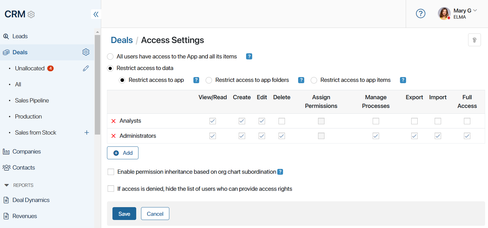

BRIX provides flexible access settings for CRM apps and their items and allows you to limit access to lead and deal pipelines.
Select a user, user group, or organizational chart item and define actions available for each of them. You can differentiate access within the Sales department. To do this, use the Sales teams directory. Add employees there and grant certain rights to different groups.
For example, sales reps may be allowed to create, edit, or delete deals while other employees may only have permission to view them. In this case, each sales team within the department can have access to deals from a specific pipeline.
Set up permissions
You can set up separate access permissions for each CRM app. These access settings will be applied to all pipelines in the apps. For example, if you restrict access to the Deals app for a specific employee, they will not be able to access the deal pipelines, too.
To manage access settings, go to the app page and click on the gear icon to the right of the app’s name. Then click Access Settings.

You can restrict access to the data:
- Restrict access to app. If you select this option, the same access settings will be applied to all items in the app. For example, sales reps will be able to create and edit deals, but only the sales manager will be able to delete them.
- Restrict access to app folders. This option can only be used if you have a folder tree with hierarchical folders set up in the app. You can configure access to each of the folders separately.
- Restrict access to app items. If you select this option, access permissions will be configured individually for each deal. For example, when creating a new deal, a sales rep will be able to give access to this deal to their superior. At the same time, they will not have access to deals created by other employees.
You can read more about the types of access permissions in the Access permissions in BRIX article.
Visibility of pipelines and items
You can configure the visibility of each pipeline in the Leads and Deals apps, including restricting access to the Unallocated and All pipelines. The settings determine which users are allowed and aren’t allowed to see the pipelines and the items they contain.
Thus, you can hide deals and leads from employees who do not work with sales directly. In this case, if access to view leads or deals is enabled for such an employee, they can open the item page by clicking on the link.
To set visibility settings for a pipeline, follow the steps:
- In the CRM workspace, go to the Deals or Leads app.
- In the left menu, click on the
 icon next to the name of the Unallocated page.
icon next to the name of the Unallocated page. - Click on the gear icon next to the required pipeline.
In the pop-up, specify the system or custom groups and roles created within the CRM workspace or the Deals or Leads apps. Employees included in the selected groups and roles will have access to the pipeline.